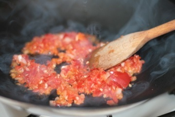
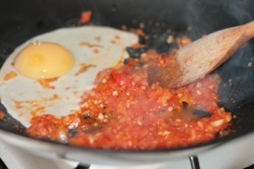
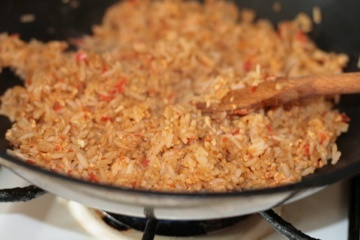

Resep Nasi Goreng Spesial

Bahan-bahan yang dibutuhkan :
- 2 piring nasi
- 2 cabai merah
- 2 cabai rawit
- 1 siung bawang putih
- 3 butir bawang merah
- Mentega atau minyak goreng secukupnya
- 1 butir telur
- Kecap manis secukupnya
- Garam secukupnya
Langkah-langkah :
1. Pertama, haluskan cabai, bawang merah dan bawang putih menggunakan ulekan.
Agar lebih mudah, anda harus menggunakan blender untuk menghaluskannya |
2. Masukkan mentega atau minyak goreng pada wajan yang telah dipanaskan.
Selain mentega dan minyak goreng, anda juga bisa menggunakan mentega. |
3. Masukkan bumbu yang telahdihaluskan tadi kemudian aduk hingga merata |

4. Setelah itu, masukkan telur pada wajan dan aduk kembali hingga tercampur rata. |

5. Masukkan bahan tambahan agar lebih enak kemudian aduk hingga merata. |
Bahan tambahan yang dimaksud seperti suwiran ayam, irisan sosis, daging,
jamur, atau kacang polong.
6. Tambahkan garam dan kecap manis secukupnya. |
7. Masukkan nasi putih, kemudian aduk kembali hingga benar-benar tercampur. |
8. Cicipi terlebih dahulu nasi goreng anda. Tambahkan garam dan kecap jika
rasanya kurang pas. Kemudian aduk kembali hingga benar-benar tercampur. |

9. Jika sudah benar-benar pas, nasi goreng spesial siap dihidangkan. |